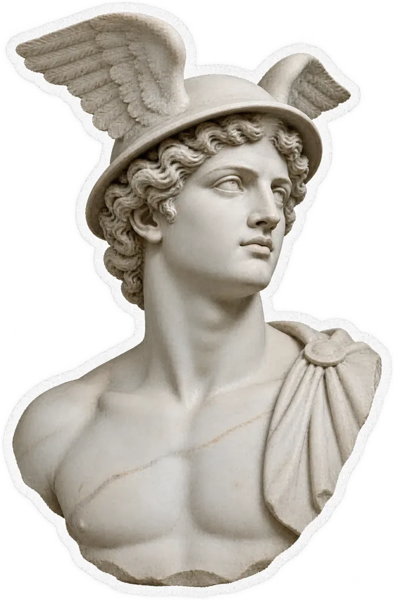
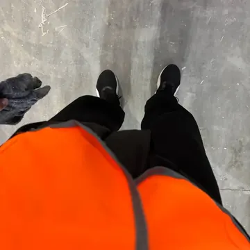
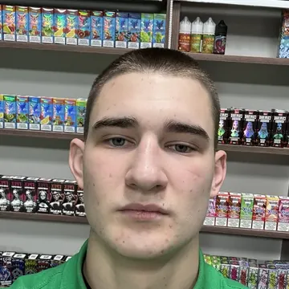
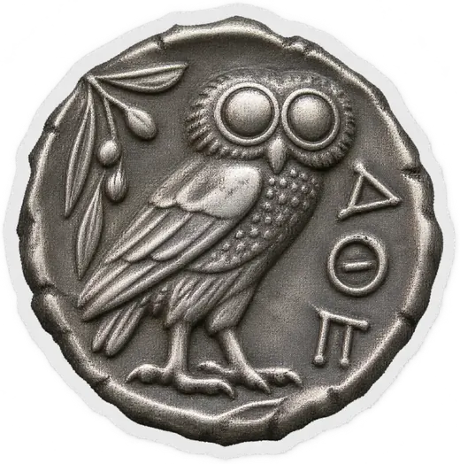

ФЦН
FINCPA NETWORKС неё начинают почти все. Можно быть самозанятым или ИП. Здесь большинство делает себе регистрацию бизнеса через Альфа-Банк.
РКОРегистрация бизнесаМФО
Регистрация


Первый из трёх материалов. Сегодня — партнёрки, регистрация бизнеса, главный продукт ниши и самый простой. Читай по порядку, это 15 минут.
Начать день 1Без богатых родителей, связей и капитала. Ниже — как было на самом деле. Не чтобы похвастаться, а чтобы ты понимал: всё, что я дам за эти три дня, я сначала прошёл сам.


А со мной уже 160 учеников, четверо из них — кураторы в академии. Эти три дня — начало нашего обучения. Сегодня я покажу, как реально начать зарабатывать в этой нише: куда регистрироваться, как открыть бизнес и за что банк платит.
поехали ↓
Банки и сервисы платят за нового клиента. Ты приводишь человека — себя или друга — по своей ссылке и получаешь выплату. Большинство новичков хватаются за всё подряд и уходят со словами «не работает». Без карты ты как турист в чужом городе.
Счёт для бизнеса. Самый прибыльный, через него идёт около 70% денег.
95–130 тыс. с человекаОдобряют всем с 18 лет. Самый лёгкий старт.
~5 тыс. с человекаПлатят в 2–3 раза больше дебеток.
~10 тыс.Лучшая математика по вложениям.
~30 тыс.Порядок — не моё мнение, а психология человека. Сначала самое прибыльное: он получает деньги, видит, что всё честно, и доверяет дальше. Нарушишь порядок — потеряешь даже того, кого мог провести по всем четырём.
Это нужно, чтобы партнёрки официально переводили тебе деньги. Бесплатно, без взносов, с телефона.
Официальное приложение налоговой.
Вход по паспорту или через Госуслуги. Минут 10.
Против 13% с зарплаты. Отчётов нет, приложение считает всё само.
Продукты — это что ты предлагаешь человеку. Партнёрки — это через что тебе платят. Без них у тебя просто нет инструмента получить деньги. Один и тот же банк на разных партнёрках стоит по-разному, поэтому регистрируешься везде и перед каждой заявкой сверяешь, где выгоднее.
С неё начинают почти все. Можно быть самозанятым или ИП. Здесь большинство делает себе регистрацию бизнеса через Альфа-Банк.
Можно зарегистрироваться даже без самозанятости, как обычное физлицо. Выводить можно на расчётный счёт или в криптовалюте.
С ней у нас отличные отношения. Заявки на ВТБ и Альфу можно заводить ещё до регистрации бизнеса. Менеджеры всегда на связи.
Можно работать обычными ссылками и по агентскому каналу. Хорошо льются РКО и регистрация бизнеса. Здесь Инго Банк до 20 000 ₽.
Самая универсальная: почти всё в одном месте. Работает и по ссылкам, и по агентскому каналу.
Менеджеры на партнёрках — твои лучшие друзья.
Не стесняйся писать им: они дают очень много полезной информации. Не получается или непонятно — сразу к менеджеру.
Просто копируешь ссылку и отправляешь человеку. Он переходит и оформляет.
Ты сам заполняешь заявку: ФИО, телефон, почта человека. Нужен там, где банк проверяет клиента заранее — например, ВТБ или Альфа до регистрации бизнеса.
ИП на НПД — это расширенная самозанятость: тот же налог 4–6%, никаких отчётов. Без ИП банк не откроет счёт для бизнеса, а именно за него платят больше всего.
Самая быстрая регистрация. Открываешь приложение, подаёшь заявление, встречаешься с курьером, подписываешь документы — ИП готов через 1–2 дня. Своя электронная подпись, без партнёрки.
Регистрация бизнеса плюс РКО через ФЦН. Банк платит тебе за саму регистрацию — это твои первые деньги на себе.
Платят и за регистрацию бизнеса, и за РКО. Выручал всех, когда Альфа временно не платила. Делается дольше остальных.
У большинства парней 18–30 ни одного из этих ограничений нет.
Расчётный счёт для предпринимателя. Представь солидного дядю на Крузаке, который решил заняться бизнесом, но без РКО. Неделю-месяц его личная карта проживёт, а потом банк заинтересуется — и начнутся вопросы. РКО делает всё чисто и официально.
Принимать оплату официально, платить подрядчикам и налоги, подключать эквайринг и маркетплейсы, не бояться блокировки личных карт.
Паспорт и телефон. Пара кликов, бесплатный тариф, встреча с менеджером банка или онлайн-подтверждение. Все платные услуги убираем.
Каждый ИП для банка — стабильный кэш на годы: обороты, комиссии, эквайринг, кредиты. Поэтому банки дерутся за каждого клиента.
РКО будет актуален, пока делается бизнес — то есть всегда.
Вот главный секрет, который не видят новички. Открыл человек ИП — дальше он может открыть счёт не в одном банке, а в восьми-десяти. За каждый — отдельная выплата. Колонны храма — это банки.
| Банк | Выплата | Что сделать |
|---|---|---|
| Альфа · регистрация | ~16 000 ₽ | ФЦН · регистрация ИП + РКО. Первые деньги на себе |
| Инго Банк | до 20 000 ₽ | РКО Партнёр · за 30 дней 3 расходные операции на 50 000 ₽ в сумме |
| ВТБ | до 10 000 ₽ | Бизнес Система (можно до регистрации ИП) · открыть счёт и пополнить |
| Локо Банк | 9 500 ₽ | 3 платежа разными суммами за 3–4 дня |
| ОТП | 9 000 ₽ | ФЦН · 2 платежа разными суммами |
| Озон | до 8 000 ₽ | Положить чуть больше 3 000 ₽ и подержать 4–9 дней |
| Уралсиб | 6 000 ₽+ | Переводы со счёта на 15 000 ₽ в сумме |
| Контур | 6 000 ₽ | РКО Групп · 3 платежа |
| Свой Банк | 6 000 ₽ | 3 платежа на 20 000 ₽ в сумме |
| ПСБ | до 10 000 ₽ | Бизнес Система · без ЦД, но проверяет реальность бизнеса — не первым |
| Левобережный | до 4 500 ₽ | Оплата тарифа + 1 исходящая операция |
Каждый банк просит одно целевое действие (ЦД): пополнить счёт или сделать пару платежей. Большинство отказов случается не потому, что банк придирается, а потому, что ЦД сделали криво — одной суммой, в один день, без нормального назначения.
Три перевода по 5 000 ₽ — это палится как искусственная активность. Делай разные суммы, например 4 000 + 1 000 + 3 850 ₽.
Назначение должно соответствовать виду деятельности получателя (его ОКВЭД). Пустое или «просто перевод» — риск отказа.
У Локо, Уралсиба, Озона своя логика по срокам. Читай условия оффера на партнёрке и растягивай ЦД на несколько дней.
Банк платит только за новых. Была карта в этом банке три года назад — выплаты не будет. Один вопрос до ссылки экономит вечер.
Они проверяют реальность бизнеса. Делай их через 3–4 месяца после регистрации, когда у бизнеса уже есть история.
Иначе партнёрка может отменить уже засчитанные деньги. Это называется срез.
Это нормально. Банки и партнёрки проверяют заявки — от пары дней до пары недель. Это не значит, что система не работает: между действием и деньгами есть техническая пауза. Кто знает об этом заранее, тот не паникует.
Частая причина — разные номера телефона: например, профиль в Озоне или WB на один номер, а бизнес пытаешься оформить на другой. Ещё вариант — устаревшие паспортные данные.
Звони в горячую линию банка — обычно решается за один звонок. Проблема не в тебе, а в их автоматизации.
Отключи блокировщик звонков с незнакомых номеров. Менеджер задаёт базовые вопросы: подтверждение заявки, ИНН, сфера деятельности. Потом курьер, обычно на следующий день, — подписываешь документы, и счёт открывается в тот же день.
Электронная подпись — подтверждаешь платёж СМС-кодом. Иногда (например, в Газпромбанке) её не выпускают вместе со счётом — поэтому при открытии сразу говори, что тебе нужна ЭП.
Для подписания документов по ссылкам используй Яндекс Браузер — в нём встроены российские сертификаты. Либо поставь сертификаты Минцифры для Safari или Chrome.
Можно использовать свою кредитку: переводишь её деньгами, а потом возвращаешь в льготный период без процентов. Как с кредитками работать правильно — разберём во втором дне.
Обычная банковская карта для своих денег. Не кредит, не заём. Банк зарабатывает на комиссиях и на том, что человек становится его клиентом — потом ему можно предложить кредитку, ипотеку, страховку. Поэтому за «свежего» клиента банки платят.

Сейчас все дебетовые карты по партнёркам открываются с 18 лет. Ни кредитной истории, ни дохода банк не проверяет — одобряют практически всем.
Только при действующем банкротстве или арестах по счетам в этом банке. В другом банке, где ареста нет, — оформят.
Вторым заходом, после РКО. Человек уже видел выплату и доверяет: «Кстати, ещё 5–6 тысяч можем поднять на дебетовках за пару дней».
Дебетовки есть почти у всех банков: Альфа, Совкомбанк, новички вроде Тинго. Цифры меняются — актуальный список смотри на партнёрках. Сама сумма не огромная, но дебетовка — это про объём: 3–4 банка с одного человека — уже 4–6 тысяч чистыми за полчаса.
«Бро, смотри, что ещё можно докрутить. Есть пара дебетовых карт — оформляются за 10 минут, тратишь с неё 500 ₽ на свои же покупки, и банк платит 1 500 ₽. Это не заём и не кредит, просто карта. У тебя в Т-Банке или ВТБ карта раньше была?»
90% новичков думают, что один человек — это одна выплата. А это целый маршрут. Сегодня мы прошли первые две его части.
Это потолок, когда человек одобряется везде. Реально по нише — 80–100 тысяч с активного человека. Но если вести 5–10 человек параллельно, это уже 300–500 тысяч в месяц.
Желание — отправная точка всех достижений.
РКО и дебетовки — это фундамент. Но с того же человека можно поднять ещё десятки тысяч, а потом понять, где брать людей и как выйти на 300–500 тысяч в месяц. Это я покажу в следующих материалах.
Второй материал выйдет завтра в канале — там же, где ты забрал этот. Включи уведомления, чтобы не пропустить.